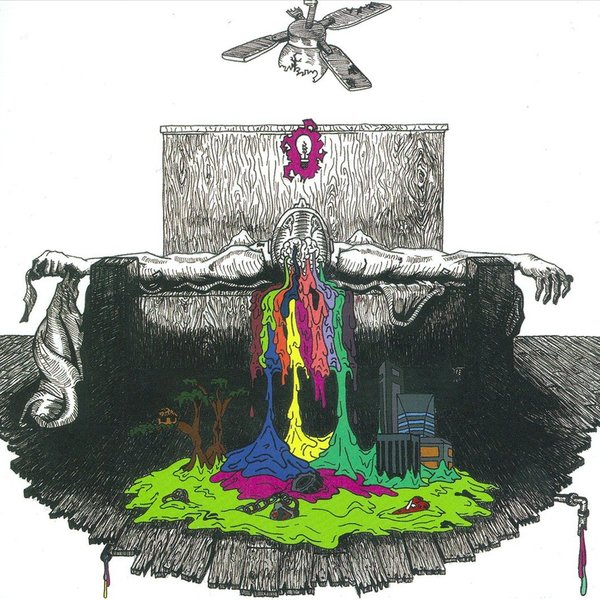
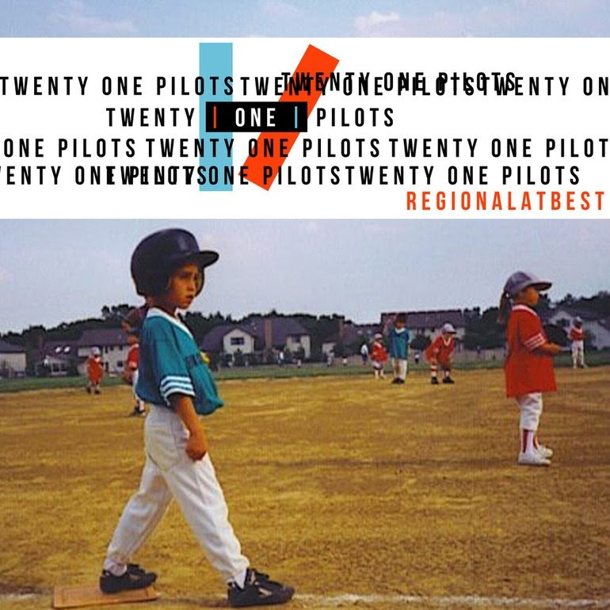
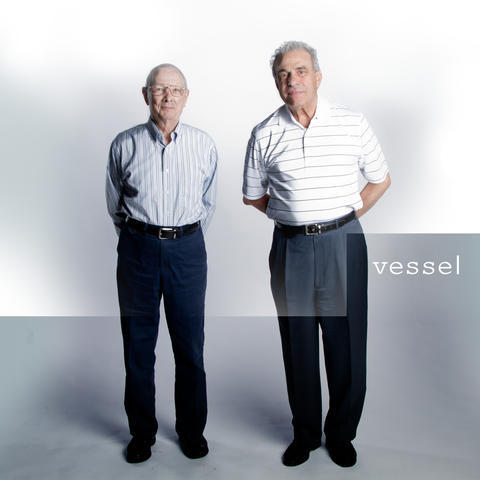

Twenty One Pilots is the hottest band on the pop scene right now! Started in 2009 by singer/songwriter Tyler Joseph with 2 other members, they released their first self-produced album self titled as "Twenty One Pilots". Shortly thereafter, the guitarist and the drummer left the band, only for Tyler to find his new drummer, Joshua Dun. To this day they have become the best of friends and released 3 more albums, 2 of which were released on the "Fueled by Ramen" record label, and the boys have performed on several local and world tours due to their success on the music scene.
"Self Titled / Twenty One Pilots"
The first official album of the band released in 2009, completely comprised of songs written by Tyler Joseph, it is a unique blend of poetry, synthesized music, rap, and many other genres included in the album. Dot be deceived, the songs on this album may sound happy, but the lyrics are full of despair.
"Regional at Best"
The second album released by the band in 2011, this time as the iconic duo they are today, Joshua Dun having joined the band really adds depth to the music with his talent on the drums. The album features equally dark songs as the previous album, subliminally explaining the struggles of depression.
"Vessel"
Their first album on their major label debut with "Fueled by Ramen" and third studio album overall; released in 2013, "Vessel" implements various elements of pop and rap not yet seen in their previous albums. This album features a variety of "happier" sounding songs compared to past work. "Vessel" also features re-recorded versions of their more popular previous songs such as:
"Blurryface"
Their most recent album, and most successful yet, "Blurryface" is their fourth studio album which has featured several songs on the "Billboard Top 100 Lists". "Blurryface" has been the groups main claim to fame, reaching a global audience, the band has received many awards since the release of this album including "Most Iconic Duo", and "Best Album Written by a Single Artist".